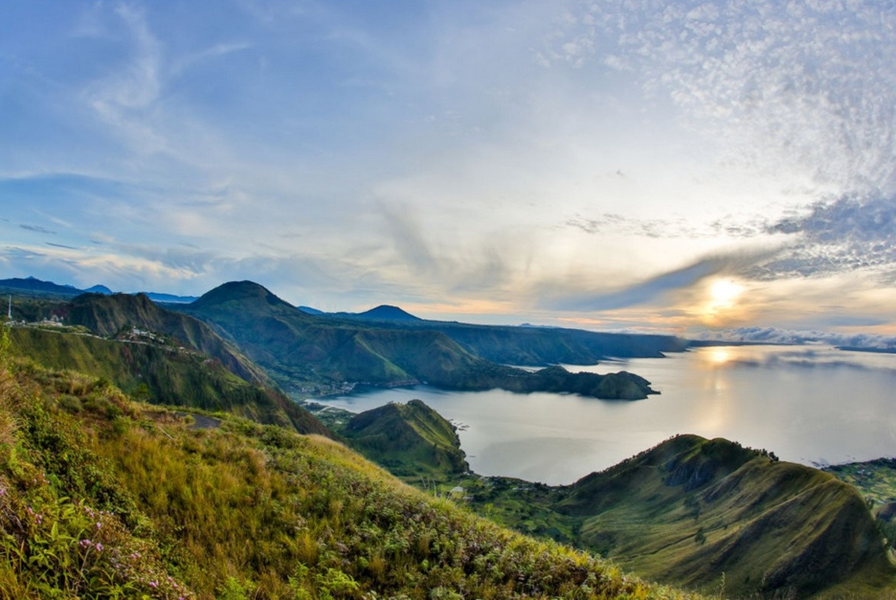
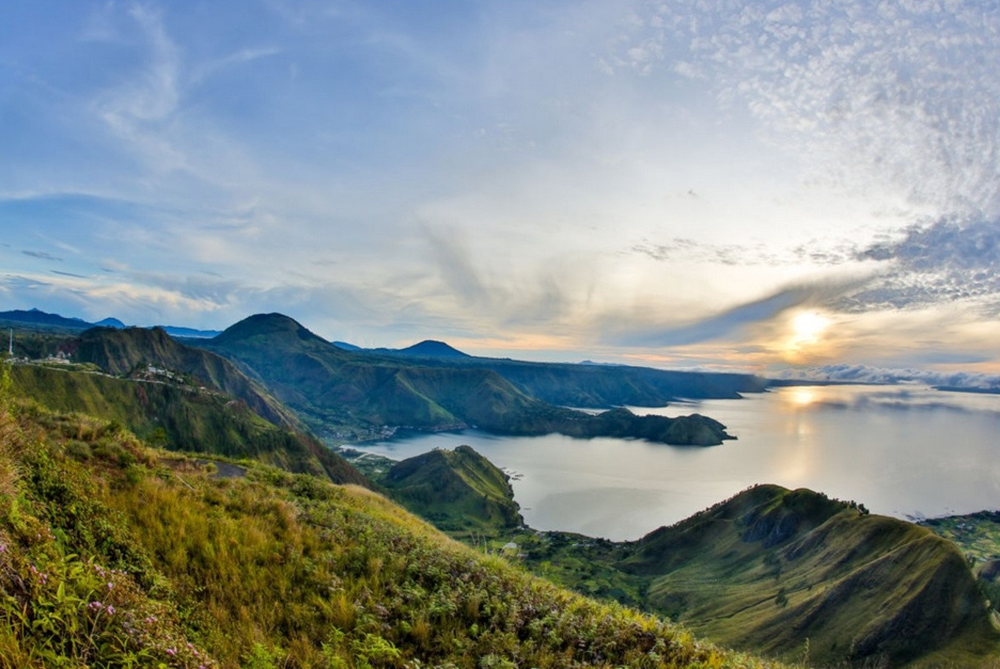

Danau Toba
Danau Toba adalah salah satu danau terbesar di Indonesia dan di Asia Tenggara serta menempati peringkat dua danau terluas di dunia setelah Danau Victoria di Afrika. Terletak di propinsi Sumatera Utara, Danau ini menyimpan berjuta pesona alam yang tak akan habis untuk dijelajahi.
Sejarah mencatat bahwa danau ini terbentuk dari letusan gunung berapi super. Danau ini bak lautan luas jika dilihat di sepanjang pesisirnya. Anda akan dibuat kagum oleh keindahan Danau Toba ini, hamparan bukit barisan yang mengelilinginya dan pulau vulkanik yang berada di tengahnya, yaitu Pulau Samosir.
Letusan Danau Toba ini memiliki daya ledak yang sangat kuat yakni 26000 megaton TNT lebih dari daya ledar bom nuklir hiroshima dan nagasaki (0,015 megaton TNT) dan letusan gunung krakatau (150 megaton TNT). Berdasarkan daerah.sindonews (06/07/2018) ketinggian letusannya mencapai 50 km dan material abunya menyebar ke seluruh atmosfer bumi hingga menutupi cahaya matahari yang masuk ke bumi selama beberapa tahun. Akibatnya temperatur bumi saat itu menjadi turun sampai 3-5 derajat celcius. Selain menghasilkan tsunami yang besar, letusan Gunung Toba juga mengakibatkan kematian massal manusia dan beberapa spesies mahluk hidup lainnya. Dari beberapa hasil penelitian yang telah dilakukan, letusan gunung ini diduga menyusutkan lebih dari 60% populasi manusia saat itu, yaitu sekitar 60 juta jiwa.
Setelah meletus, gunung ini membentuk kaldera yang kemudian terisi air dan akhirnya menjadi danau terbesar di Asia Tenggara. Danau inilah yang dikenal dengan nama Danau Toba. Secara geografis, Danau Toba dikelilingi 7 kabupaten di Sumatra Utara yakni Kabupaten Samosir, Simalungun, Humbang Hasundutan, Dairi, Karo dan Toba Samosir, dan Tapanuli Utara. Danau Toba adalah danau dengan kaldera seluas 1.145 kilometer persegi, oleh karena itu, Danau Toba ditempatkan sebagai danau terluas di Asia Tenggara dan danau vulkanik terbesar (danau yang terbentuk akibat letusan gunung berapi) terbesar di dunia.
Banyaknya lokasi indah dan ragam kegiatan yang ada membuat Danau Toba tidak cukup dinikmati dalam sehari. Kalau ingin mengunjunginya, luangkan waktu lebih banyak agar liburanmu di sini lebih berkesan. Apa saja sih aktivitas wisata yang bisa dilakukan di Danau Toba? Beberapa rekomendasi pelancong ini dapat kamu coba dan semuanya menyajikan sisi-sisi Danau Toba yang keren banget!
- Bersepeda di Huta Ginjang yang membuat lelah tidak terasa.
- Trekking yang akan membuat sehat jiwa dan ragamu.
- Berkemah sambil menikmati kampung marga Silalahi di Tao Silalahi.
- Berendam air panas di Pangururan Aek Rangat Hot Spring di tengah kesejukan.
- Menjelajahi Danau Toba dengan olahraga air sesuai pilihanmu.

 
